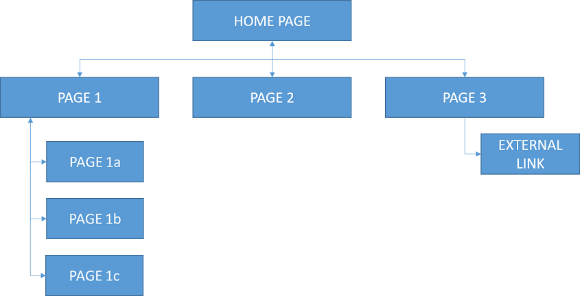

Intro to Website Design
Website Design and Development will use 3 different coding languages; HTML, CSS and JavaScript. Each have their own purpose and use case.
Recommended sites:
I would recommend downloading Notepad++ at home so you can practice your website development skills out of school. Download from here: Notepad++ (Windows OS only).
If you own a Mac (Apple laptop or desktop) that runs MacOS then you will need to use an alternative - recommended is SublimeText or TextMate.
Analysis
Before we start writing HTML, CSS and JavaScript, we must first understand exactly what it is we are being asked to create. This step analyses the requirements of the website and allows us to plan ahead as to how our website will look, work and function
End-user Requirements
The end user requirements are features or facilities of the website that the user should be able to access. For example, an end user requirement of the website Youtube would be that the user should be able to watch videos. Another example; an end user requirement for the website Amazon is that the user should be able to search, find and buy a product.
Functional Requirements
A functional requirement can be thought of as 'why has the website been created?' if we look at YouTube as an example again, we can say that they functional requirement is that the website should display videos
Design
The design stage will require you to create navigational structures, user interfaces, wireframes and low fidelity prototypes.
Navigational Structure
At N5 level, a simple diagram to show the pages of the website and how they link to other pages, either internally or externally. We must include arrows to indicate the direction of travel between the pages.
User Interface Design
When designing the website we need to think about the user's and what their requirements are. For example; a website that is aimed at children should be easy to use with large buttons, minimal text, increased use of images and bright, attractive colours. We call this the target audience and there are many aspects to a user that we must consider:
- Age
- Interest
- Experience Level
- Accessibility (Visually or physically impaired etc)
Wireframes are used to plan the final layout of the webpages in the website. They are usually done with pencil and paper to sketch out a brief design, but can do be done digitally.
- Page title in the tab bar
- Areas of text; paragraphs, lists, headings
- Images to be used (and their resolution)
- Navigation
- Font information (size, colour and font face)
- Page styling information (background colour, width, alignment etc)
Here is an example of a wireframe:

User Interface
Implementation
HTML
HTML - HyperText Markup Language is the language that builds the structure for websites. This can be thought of as the skeleton of a webpage/website.
Basic HTML Structure
To begin creating a webpage, and eventually a website, we must start with the basic HTML structure.
<html>
<head>
<title>Title Here</title>
</head>
<body>
</body>
</html>
As you can see above, we have 4 different tags; html, head, title and body - these tags tell the browser what kind of content is likely to be found between these tags.
- <html> tag will tell the browser that everything that appears between the open and close HTML tag will be HTML code.
- <head> tag will then tell the browser that everything that appears inbetween will be information about the website. Nothing added here will be seen on the page.
- <title> tag will contain the title of our page - this can only be seen at top of the browser window, it will not be displayed on the webpage itself.
- <body> tag will contain all of the content that we wish to have displayed on the webpage. Any text, images, videos, audio and more will added here.
Text
Lets display some text using a few different tags:
<body>
<h1>The h1-h6 tag(s) are used for inserting headings, largest is h1 and smallest being h6</h1>
<p>The p tag is used for inserting paragraph text</p>
<ul>The ul tag is used for inserting an Unordered List
<li>The li tag is used for inserting an item into the list</li>
<li>The li tag is used for inserting an item into the list</li>
<li>The li tag is used for inserting an item into the list</li>
</ul>
<ol>The ul tag is used for inserting an Ordered List
<li>The li tag is used for inserting an item into the list</li>
<li>The li tag is used for inserting an item into the list</li>
<li>The li tag is used for inserting an item into the list</li>
</ol>
</body>
The above results in the following output;
The h1-h6 tag(s) are used for inserting headings, largest is h1 and smallest being h6
The p tag is used for inserting paragraph text
- The li tag is used for inserting an item into the list
- The li tag is used for inserting an item into the list
- The li tag is used for inserting an item into the list
- The li tag is used for inserting an item into the list
- The li tag is used for inserting an item into the list
- The li tag is used for inserting an item into the list
Images
Inserting an image uses a single tag, this is one of few HTML tags that do not require a closing tag:
<img src="image.jpg">
A few things to note:
- The image source (src) is looking for an image file, you must specify exactly where this image is in your folder setup, as well as the correct file type that the image is saved as.
- We can control the image size here in the img tag or through external CSS
- This is one of the few tags that do not require a closing tag
HTML Tag List
Below is a list of HTML tags and what they are used for. It isn't a complete list, but a comprehensive list of all the HTML tags that you will be expected to know for Computing Science N5 and Higher
| Tag: | Definition: |
|---|---|
| <a> | Defines a hyperlink |
| <audio> | Defines sound content |
| <b> | Defines bold text |
| <body> | Defines the document's body |
| <br> | Defines a single line break |
| <button> | Defines a clickable button |
| <code> | Defines a piece of computer code |
| <col> | Specifies column properties for each column within a <colgroup> element |
| <div> | Defines a section in a document |
| <footer> | Defines a footer for a document or section |
| <form> | Defines an HTML form for user input |
| <h1> to <h6> | Defines HTML headings |
| <head> | Defines information about the document |
| <header> | Defines a header for a document or section |
| <html> | Defines the root of an HTML document |
| <img> | Defines an image |
| <input> | Defines an input control |
| <label> | Defines a label for an <input> element |
| <li> | Defines a list item |
| <link> | Defines the relationship between a document and an external resource |
| <main> | Specifies the main content of a document |
| <nav> | Defines navigation links |
| <ol> | Defines an ordered list |
| <option> | Defines an option in a drop-down list |
| <p> | Defines a paragraph |
| <script> | Defines a client-side script - usally JavaScript |
| <section> | Defines a section in a document |
| <select> | Defines a drop-down list |
| <source> | Defines multiple media resources for media elements (<video> and <audio>) |
| <strong> | Defines important text |
| <style> | Defines style information for a document |
| <sub> | Defines subscripted text |
| <sup> | Defines superscripted text |
| <table> | Defines a table |
| <td> | Defines a cell in a table |
| <textarea> | Defines a multiline input control (text area) |
| <th> | Defines a header cell in a table |
| <time> | Defines a date/time |
| <title> | Defines a title for the document |
| <tr> | Defines a row in a table |
| <u> | Defines text that should be stylistically different from normal text |
| <ul> | Defines an unordered list |
| <video> | Defines a video or movie |
CSS
CSS - Cascading Style Sheet is the language that adds style and design to the websites. This can be thought of as the clothes of the website.
Basic CSS
To start with we will look at applying some style to the default HTML tags that we looked at in the HTML section.
body{
background-color:blue;
}
p{
font-family:Arial;
font-size:23px;
color:white;
}
The above will make any text in a <p> tag have the font of Arial, 23px font size and be white in colour. The entire body of the webpage will have a blue background.
Expected CSS Usage
Here is a list of ways you will be expected to use CSS for Website Design and Development
| Property | Effect | Example |
|---|---|---|
National 5 |
||
| color | Changes the font colour of text | color:Purple; |
| font-size | Changes the font size | font-size:16px; |
| font-family | Changes the font of text | font-family:Arial |
| text-align | Changes the alignment of text. | text-align:center |
| background-color | Changes the background colour of an area | background-color:Blue |
Higher |
||
| margin | Margin is used to push an element away from another | margin:10px |
| padding | Padding pushes content from the edge of the element it is in | padding:5px |
| display | Display will control how an element appears on the page | display:none display:block display:inline |
| float | Float is used to change how elements sit with other elements | float:left float:right |
| clear | Clear will control how the float impacts another element | clear:left clear:right clear:both |
| list-style-type | This is a specific css rule to change how unordered lists appear | list-style-type:none list-style-type:disc list-style-type:square |
Here is a comprehensive list of CSS tags that we might be expected to use in N5/Higher Computing Science Website Design and Development:
| Tag: | Definition: |
|---|---|
| align-content | Specifies the alignment between the lines inside a flexible container when the items do not use all available space |
| align-items | Specifies the alignment for items inside a flexible container |
| background-attachment | Sets whether a background image scrolls with the rest of the page, or is fixed |
| background-color | Specifies the background color of an element |
| background-image | Specifies one or more background images for an element |
| background-repeat | Sets if/how a background image will be repeated |
| background-size | Specifies the size of the background images |
| border | A shorthand property for border-width, border-style and border-color |
| border-collapse | Sets whether table borders should collapse into a single border or be separated |
| border-color | Sets the color of the four borders |
| border-radius | A shorthand property for the four border-*-radius properties |
| border-spacing | Sets the distance between the borders of adjacent cells |
| border-style | Sets the style of the four borders |
| bottom | Sets the elements position, from the bottom of its parent element |
| clear | Specifies on which sides of an element floating elements are not allowed to float |
| color | Sets the color of text |
| display | Specifies how a certain HTML element should be displayed |
| float | Specifies whether or not a box should float |
| font | A shorthand property for the font-style, font-variant, font-weight, font-size/line-height, and the font-family properties |
| font-family | Specifies the font family for text |
| font-size | Specifies the font size of text |
| font-weight | Specifies the weight of a font |
| height | Sets the height of an element |
| left | Specifies the left position of a positioned element |
| line-height | Sets the line height |
| list-style-type | Specifies the type of list-item marker |
| margin | Sets all the margin properties in one declaration |
| margin-bottom | Sets the bottom margin of an element |
| margin-left | Sets the left margin of an element |
| margin-right | Sets the right margin of an element |
| margin-top | Sets the top margin of an element |
| opacity | Sets the opacity level for an element |
| order | Sets the order of the flexible item, relative to the rest |
| outline | A shorthand property for the outline-width, outline-style, and the outline-color properties |
| outline-color | Sets the color of an outline |
| outline-style | Sets the style of an outline |
| outline-width | Sets the width of an outline |
| overflow | Specifies what happens if content overflows an element's box |
| overflow-wrap | Specifies whether or not the browser may break lines within words in order to prevent overflow |
| overflow-x | Specifies whether or not to clip the left/right edges of the content, if it overflows the element's content area |
| overflow-y | Specifies whether or not to clip the top/bottom edges of the content, if it overflows the element's content area |
| padding | A shorthand property for all the padding-* properties |
| padding-bottom | Sets the bottom padding of an element |
| padding-left | Sets the left padding of an element |
| padding-right | Sets the right padding of an element |
| padding-top | Sets the top padding of an element |
| position | Specifies the type of positioning method used for an element (static, relative, absolute or fixed) |
| right | Specifies the right position of a positioned element |
| text-align | Specifies the horizontal alignment of text |
| text-indent | Specifies the indentation of the first line in a text-block |
| text-justify | Specifies the justification method used when text-align is "justify" |
| text-orientation | Defines the orientation of the text in a line |
| text-overflow | Specifies what should happen when text overflows the containing element |
| top | Specifies the top position of a positioned element |
| vertical-align | Sets the vertical alignment of an element |
| visibility | Specifies whether or not an element is visible |
| white-space | Specifies how white-space inside an element is handled |
| width | Sets the width of an element |
| word-break | Specifies how words should break when reaching the end of a line |
| word-spacing | Increases or decreases the space between words in a text |
| word-wrap | Allows long, unbreakable words to be broken and wrap to the next line |
JavaScript
JavaScript is the language that adds interactivity and dynamic elements to the websites.
For example, move your mouse over the text below and then move your mouse off - notice the change?
EXAMPLE JAVASCRIPT
function changeToRed(){
document.getElementById("target").style.color="red";
}
At National 5 level you will only need to know about onmouseover and onmouseout events. You will not be expected to write JavaScript. Put simply, when you move your mouse over an element, it runs a subprogram. When you move your mouse off the element, it runs another subprogram. Typically you will use a onmouseover and onmouseout event to change the format of an element and then return it back to its original state.
The JavaScript code will go between <script></script> tags placed in the <head> tag.
<script>
function onMouseOver(){
document.getElementById("js-example").style.color = "Red";
}
function onMouseOut(){
document.getElementById("js-example").style.color = "Black";
}
</script>Breaking down the above code we have 2 parts to look at:
document.GetElementById("js-example") - this is telling the browser to go and find an element on our page (document) with an ID that we supplied.
.style.color = "Red" - the next part is a property and a value we want to change for our element.
Some more properties we change using JavaScript:
.style.fontSize - This changes the font size
.style.backgroundColor - This changes the background colour of the element
Testing
Testing of the website is done against the user and functional requirements. You will also test the layout against the wireframe to ensure that the design has be implemented as planned.
Checklist of tests:
- Are all user and functional requirements met?
- Does the final layout match the wireframe?
- Do all media load and work? (Check videos and audio files play)
- Do all hyperlinks work? External and Internal
Evaluation
Evaluating the website will again, link back to the user and functional requirements. We can evaluate whether the website is fit for purpose if it does or does not meet any/all the functional and user requirements. You should always refer back to these requirements when evaluating the fitness for purpose. If any of the requirements are not met, then the website can be considered not fit for purpose because of those reason(s).